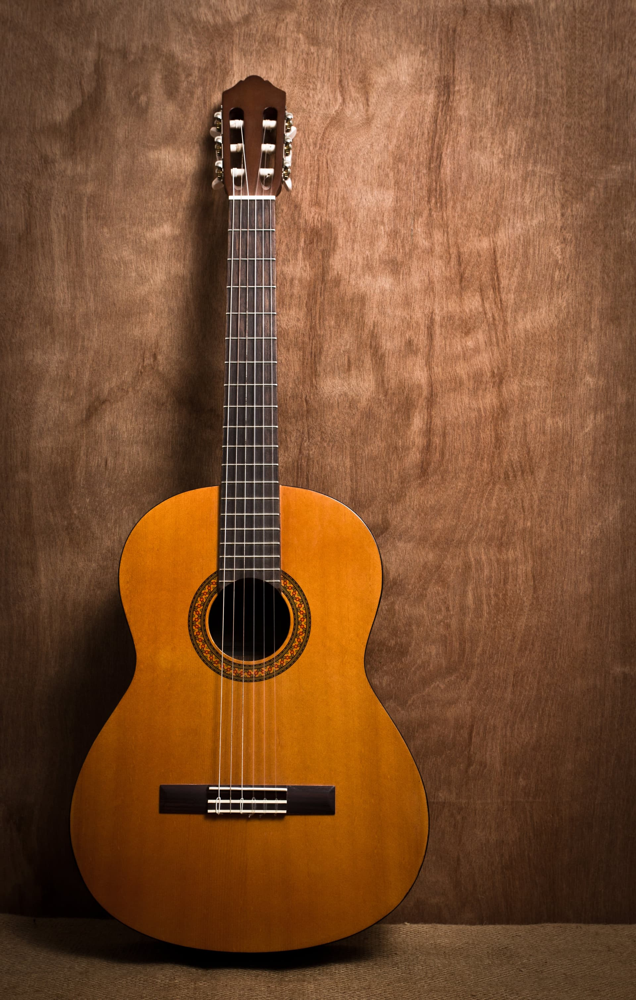
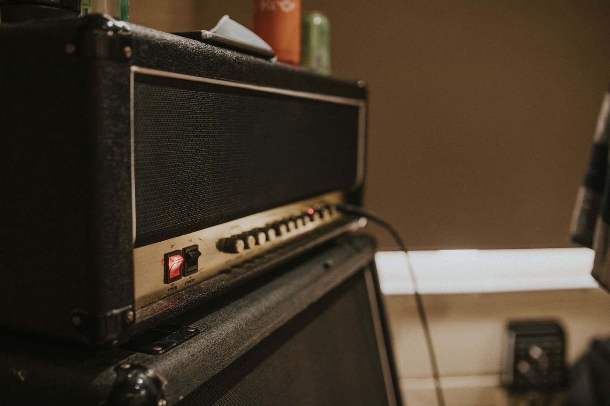

Die ersten 5 Akkorde auf der Gitarre
📅 Oktober 2024 | ⏱️ 7 Minuten Lesezeit
Du möchtest Gitarre spielen lernen und fragst dich, wo du anfangen sollst? Die gute Nachricht: Mit nur fünf einfachen Akkorden kannst du bereits hunderte bekannte Songs spielen! In diesem Guide zeigen wir dir die wichtigsten Anfängerakkorde und wie du sie meisterst.
Die magischen Fünf: Em, Am, C, G und D
Diese fünf Akkorde sind die absoluten Grundpfeiler für Gitarrenanfänger. Sie kommen in unzähligen Songs vor – von Pop über Rock bis Folk. Beherrschst du diese Akkorde, kannst du schon richtig viel Musik machen!
1. E-Moll (Em) – Der perfekte Einstieg

Warum zuerst Em? Dieser Akkord ist der einfachste von allen. Du brauchst nur zwei Finger und kannst direkt loslegen!
So greifst du Em:
• Zeigefinger auf den 2. Bund der A-Saite (5. Saite)
• Mittelfinger auf den 2. Bund der D-Saite (4. Saite)
• Alle sechs Saiten anschlagen
Tipps: Achte darauf, dass deine Fingerkuppen senkrecht auf die Saiten drücken, damit die anderen Saiten frei klingen können. E-Moll klingt melancholisch und kommt in vielen emotionalen Songs vor.
2. A-Moll (Am) – Der zweite leichte Akkord
Warum Am? Auch Am ist anfängerfreundlich und passt perfekt zu Em. Die beiden zusammen ergeben schon eine schöne Akkordfolge!
So greifst du Am:
• Zeigefinger auf den 1. Bund der H-Saite (2. Saite)
• Mittelfinger auf den 2. Bund der D-Saite (4. Saite)
• Ringfinger auf den 2. Bund der G-Saite (3. Saite)
• Schlage die Saiten 5 bis 1 an (nicht die tiefe E-Saite)
Tipps: A-Moll ist der Zwilling von E-Moll – fast dieselbe Fingerposition, nur eine Saite höher! Das macht den Übergang zwischen den beiden super einfach.
3. C-Dur (C) – Die erste kleine Herausforderung
Warum C? C-Dur ist einer der wichtigsten Dur-Akkorde und kommt in gefühlt jedem zweiten Popsong vor. Etwas anspruchsvoller als Em und Am, aber mit etwas Übung gut machbar.
So greifst du C:
• Zeigefinger auf den 1. Bund der H-Saite (2. Saite)
• Mittelfinger auf den 2. Bund der D-Saite (4. Saite)
• Ringfinger auf den 3. Bund der A-Saite (5. Saite)
• Schlage die Saiten 5 bis 1 an (nicht die tiefe E-Saite)
Tipps: C-Dur braucht etwas mehr Fingerstreckung. Achte darauf, dass dein Ringfinger die tiefe E-Saite nicht versehentlich berührt. Der Daumen bleibt hinten am Hals! C-Dur klingt fröhlich und hell.
4. G-Dur (G) – Der Kraftprotz
Warum G? G-Dur ist ein vollmundiger, kräftiger Akkord, der in vielen Akkordfolgen vorkommt. Er ist die perfekte Ergänzung zu C, Em und Am.
So greifst du G:
• Zeigefinger auf den 2. Bund der A-Saite (5. Saite)
• Mittelfinger auf den 3. Bund der tiefen E-Saite (6. Saite)
• Ringfinger auf den 3. Bund der hohen E-Saite (1. Saite)
• Alle sechs Saiten anschlagen
Alternative Griffweise: Manche bevorzugen Mittel-, Ring- und kleiner Finger. Probiere aus, was dir besser liegt!
Tipps: G-Dur braucht eine größere Handspanne. Nimm dir Zeit, bis alle Saiten sauber klingen. Dieser Akkord klingt offen und strahlend.
5. D-Dur (D) – Die letzte große Hürde
Warum D? D-Dur vervollständigt dein Akkord-Arsenal. Zusammen mit G und A bildet D die Grundlage für viele Rock- und Folk-Songs.
So greifst du D:
• Zeigefinger auf den 2. Bund der G-Saite (3. Saite)
• Mittelfinger auf den 2. Bund der hohen E-Saite (1. Saite)
• Ringfinger auf den 3. Bund der H-Saite (2. Saite)
• Schlage nur die Saiten 4 bis 1 an (nicht E und A!)
Tipps: D-Dur erfordert Präzision bei der rechten Hand – du musst gezielt nur die oberen vier Saiten anspielen. Das braucht etwas Übung, aber dann sitzt es! D-Dur klingt hell und energiegeladen.
Übungsplan: So lernst du die Akkorde

Woche 1-2: Em und Am
- Greife jeden Akkord einzeln und schlage alle Saiten an
- Achte darauf, dass jede Saite klar klingt
- Übe den Wechsel: Em → Am → Em → Am (jeweils 4 Schläge pro Akkord)
- Ziel: Flüssiger Wechsel ohne lange Pausen
Woche 3-4: C und G hinzunehmen
- Lerne C und G einzeln, bis sie sauber klingen
- Übe die Kombinationen: C → Am, G → Em, C → G
- Probiere die Akkordfolge: C → G → Am → Em (eine der häufigsten Folgen überhaupt!)
Woche 5-6: D-Dur und alles zusammen
- Lerne D-Dur isoliert
- Übe D → G, D → A, D → Em
- Spiele alle fünf Akkorde in verschiedenen Kombinationen
- Suche dir einen einfachen Song aus und probiere ihn!
Songs, die du jetzt spielen kannst
Mit diesen fünf Akkorden stehen dir unzählige Songs offen. Hier ein paar Klassiker:
- "Knockin' on Heaven's Door" – Bob Dylan (G, D, Am)
- "Let It Be" – The Beatles (C, G, Am)
- "Horse With No Name" – America (Em, D)
- "Wonderwall" – Oasis (Em, G, D, Am, C)
- "Love Yourself" – Justin Bieber (G, D, Em, C)
Wichtige Tipps für den Erfolg
1. Übe täglich – auch wenn es nur 10 Minuten sind
Regelmäßigkeit ist wichtiger als lange Sessions. Deine Finger müssen sich an die Bewegungen gewöhnen – und das geht nur durch Wiederholung.
2. Akzeptiere, dass Anfänger-Finger wehtun
Ja, am Anfang tun die Fingerkuppen weh. Das ist normal! Nach 2-3 Wochen bilden sich Hornhaut und es wird viel angenehmer. Durchhalten!
3. Nutze ein Metronom oder klicke mit dem Fuß
Rhythmus ist wichtiger als Geschwindigkeit. Übe die Akkordwechsel langsam und im Takt, bevor du schneller wirst.
4. Mach Pausen, wenn die Hand verkrampft
Wenn deine Hand müde wird oder sich verspannt, leg eine Pause ein. Zwing dich nicht – das führt nur zu schlechten Angewohnheiten.
Dein nächster Schritt
Mit diesen fünf Akkorden hast du das Fundament für deine Gitarrenreise gelegt. Der Weg vom ersten unsicheren Em bis zum flüssigen Spielen von Songs ist unglaublich befriedigend. Bleib dran, sei geduldig mit dir selbst – und vor allem: Hab Spaß!
Brauchst du Unterstützung? In unserer Musikschule zeigen wir dir persönlich, wie du die Akkorde am besten greifst und begleiten dich Schritt für Schritt auf deinem Gitarrenweg.